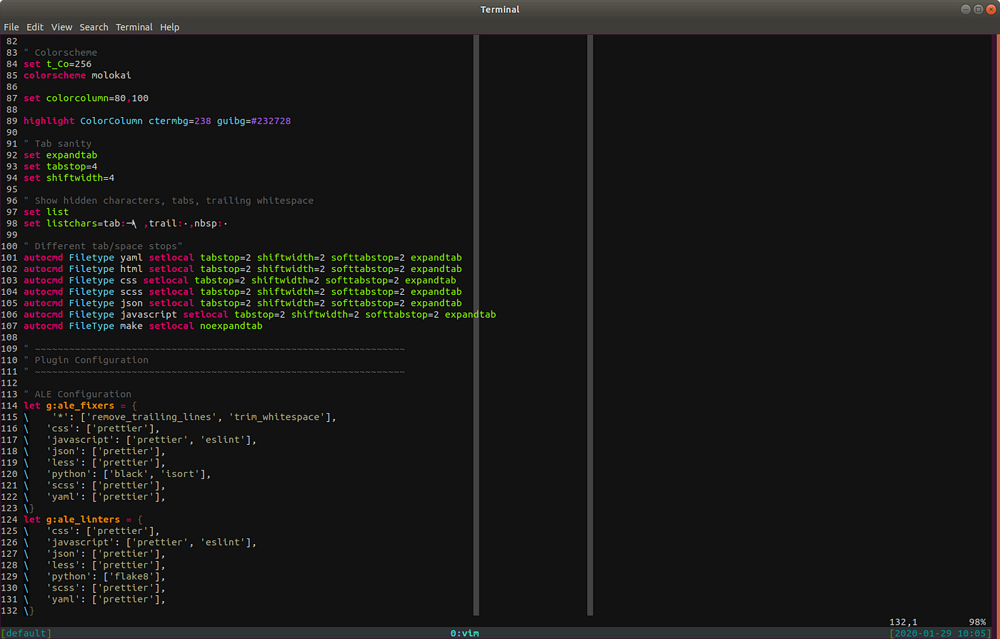

JBVim - A Vim inspired terminal based emulator written in rust.
Features Include:
- Modal editing -> Includes Normal, Visual, Command, and Insert modes to allows the user to easily navigate a document. Using classic efficient Vim keybindings such as h,j,k,l, 0, $, and more,
a user is able to quickly navigate a text file in normal mode, insert text in insert mode, and highlight, move, or delete sections of text in visual mode.
- Modal editing
- Modal editing
- Modal editing